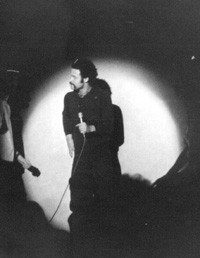

Chapter 4. Stag (version 1)
After the bombardment of 'Hair' there was a period of time when life seemed to have stopped completely. To say I was devastated at the loss of an old friend such as 'Hair' is putting it mildly. However, Chris Fogg and I were not lying fallow for long. We had long been writing and performing songs together pre-Genesis Theatre and we felt it a natural progression to write our own musical.
 Chris Fogg had the idea of a show about Herne the Hunter, who was a mystical half-man half-stag figure from Gaelic legend. The origins of Herne the Hunter have been lost somewhat in myth. He may or may not have been a real person, some references refer to him being a keeper around the reign of Queen Elizabeth I; others go back to medieval times.
Herne has appeared in various texts over the centuries, most notably in the Merry Wives of Windsor, Act 4 Scene 4:
There is an old tale goes that Herne the Hunter,
Sometime a keeper here in Windsor Forest,
Doth all the winter-time, at still midnight,
Walk round about an oak, with great ragg'd horns;
And there he blasts the tree, and takes the cattle,
And makes milch-kine yield blood, and shakes a chain
In a most hideous and dreadful manner.
You have heard of such a spirit, and well you know
The superstitious idle-headed eld
Receiv'd, and did deliver to our age,
This tale of Herne the Hunter for a truth.
~ William Shakespeare.
However, Herne has appeared in more than just fictional works, he is also mentioned in several pieces of paranormal literature.
"[Herne] was not a simple and harmless phantom, but a malignant
and, in some ways, a demon-like ghost. He wore horns like those of a stag
upon his head. His appearance boded ill to all those who saw him, and
many local misfortunes, including cattle ailments of various kinds,
were commonly attributed to his evil influence.
~ Man, Myth and Magic, Volume 10 - Editor Richard Cavendish (http://www.mysterymag.com/html/herne_the_hunter.html)
Chris Fogg being fascinated by old folk tales or legends, thought of a story idea that would provide a modern slant on the Gaelic legend of Herne. This would involve a number of time periods, opening up a plethora of different potential story lines, crossing several centuries. The music itself would support this by changing from rock to folk and indeed to all manner of different musical styles. The title for this new musical, referring to Herne's appearance, was 'Stag'.
My notes tell me that 'Stag' was in the planning in the middle of 'Hair' in 1975. Chris had been bringing me the words of the songs bit by bit and I had been writing the music without seeing the final script, not that that made any difference to the music I wrote. If Chris had a specific idea or musical style or something particular that he wanted the music to express or sound like, he would guide me in the right direction. Some pieces took ages to write, others came quite quickly, but one came immediately. Chris presented the lyrics to me; I put my hands on the piano; played a Bm chord followed by an A7 with a B bass and began singing a tune. That was the title song 'Stag'. To this day I would swear that it literally came out of thin air. I didn't write it, I was guided by some greater force. I don't think any melody or arrangement I've written has ever been that quick before or since. As was our manner of working, Chris Fogg wrote all the lyrics, I did not alter these or get involved in the actual storyline; I simply put the lyrics to music. On 16th January 1977 my scrapbooks tell me the whole thing was complete after 18 months of intense writing.
There were 29 separate musical songs in the first version and we were committed to putting it on in April of that year, so the first quarter of 1977 was all down to intense rehearsals. Again the local press were all over us like a rash and there are many clippings in my books about the show from that period of time. Money was tight as always, for we always financed our own shows, so there are many references to raffles, hastily organised concerts etc, to pay for the next show. This situation was never to change throughout our history either, for we never made any profits to speak of, by doing what we loved! Oh well, c'est la vie, I suppose!
The great day dawned and Stag was produced from 12th to 16th April 1977 at the Altrincham Garrick. The last minute fears that it would never be ready in time gave us more than a few headaches. My scrap books mention the sheer purgatory of the week leading up to the performances, for nobody could get it together at all. Chris really ended up giving the cast a right talking to on the Sunday night, and stated that if they didn't buck their ideas up it would all flop terribly. The result was that the original 3½ hour show was pruned down to 3 hours 8 minutes (including 20 minutes for the interval). The casualties? Jack-in-the-Green and When You Leave, both went entirely, a verse each of Easter Fayre and White Rose Queen, several verses of The Tall Tree, and several dialogue parts were also dropped. By Monday night, it looked like it might just be OK after all. The performances got better throughout the week, until the Saturday's last performance was everything it should have been.
A couple of heart-stopping moments occurred, for example the fuses running the band's electrical equipment blew 15 minutes from the end of the Friday performance. I and everyone else playing naturally assumed that all the microphones were also dead - for they were used to amplify the acoustic instruments - and the air was by necessity bluer than blue when we discovered our loss. The only trouble was that although the electrics were blown, the microphones were on a separate fuse and were actually working wonderfully, with every single solitary swear word coming out as clear as crystal over the speakers! Oops! Another 'moment' occurred when Neil our drummer stopped decisively two verses too early in Antichristus, so much so that the entire cast stopped also. Except dear Amanda, who bravely sang the last two verses unaccompanied by the band and solo! Oops again!
But seriously there were some unforgettable moments throughout the week, and we did get interviewed and our music played on Radios Piccadilly and Manchester (subsequently renamed Piccadilly Radio and BBC GMR). Generally the music was almost universally loved, although the 'time-slip' nature of the storyline confused a lot of people.
The band consisted of myself on keyboards and guitars, Chas Coghill on guitars, Mike Bonwick on bass, Neil Tomkinson on drums and percussion, and newcomers to the band, Penny Anson on flute, Robin Anson on acoustic guitar, and Alan Barnes on saxophone. Some of the tunes were set in the medieval ages, for these I also played renaissance lute, an instrument I had been learning for several years as a natural extension to my classical guitar playing.
The main characters were Louis Grant as Herne, Mary Clark as Mary, Mike Cheesman as John, Alison Davis as Sally, Chris Fogg as Peter, Tina and Robert Burton (Linda's children) as young Sally and Peter, Graham Brittain as Simeon, and Garyk Barnett as the Maestro. The followers of Herne - who did lots of dance, movement and chorus singing - numbered a further 20 people, and Jan Wunderley and Stella Fogg (Chris' mum) did some off-stage harmony singing.
As mentioned previously the music was wide ranging and varied from ballad songs to folk to blues to heavy rock to pastiche to huge chorus numbers to several classical elements. Nothing if not varied then! Again we have a complete recording of this staged first version of the show, done with the same stereo cassette machine set up used for 'Hair'. Also as I found out quite recently, a rehearsal recording of the original never staged version has come to light, which is almost complete with a rendition, amongst other things of Mike Cheesman singing the excised 'When You Leave'. That recording is VERY basic but fascinating nonetheless.
So that put an end to Stag, or so we thought. However, that was far from the end of the tale...